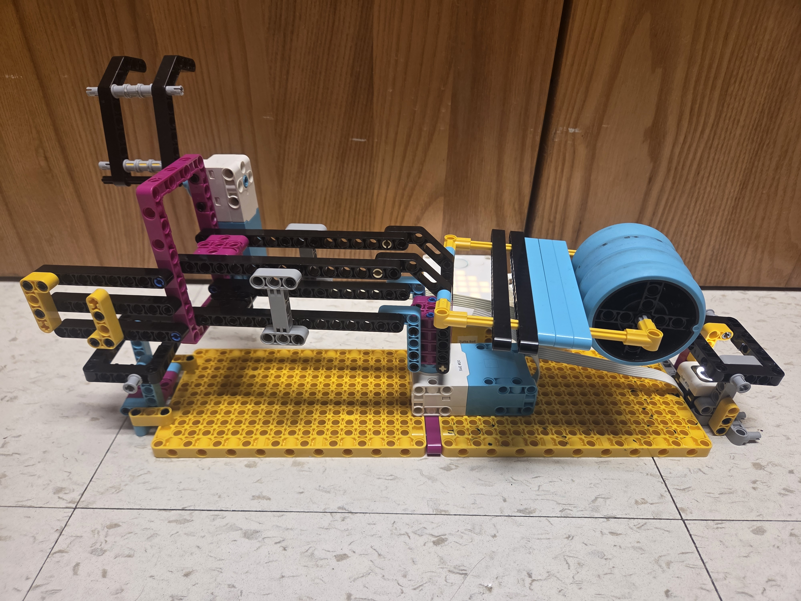
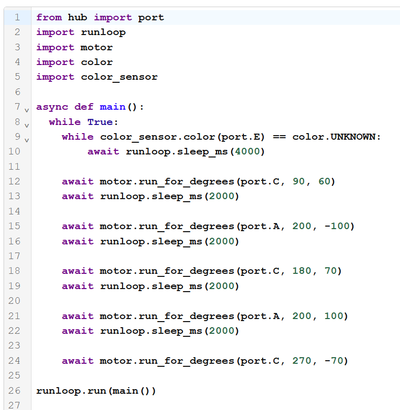
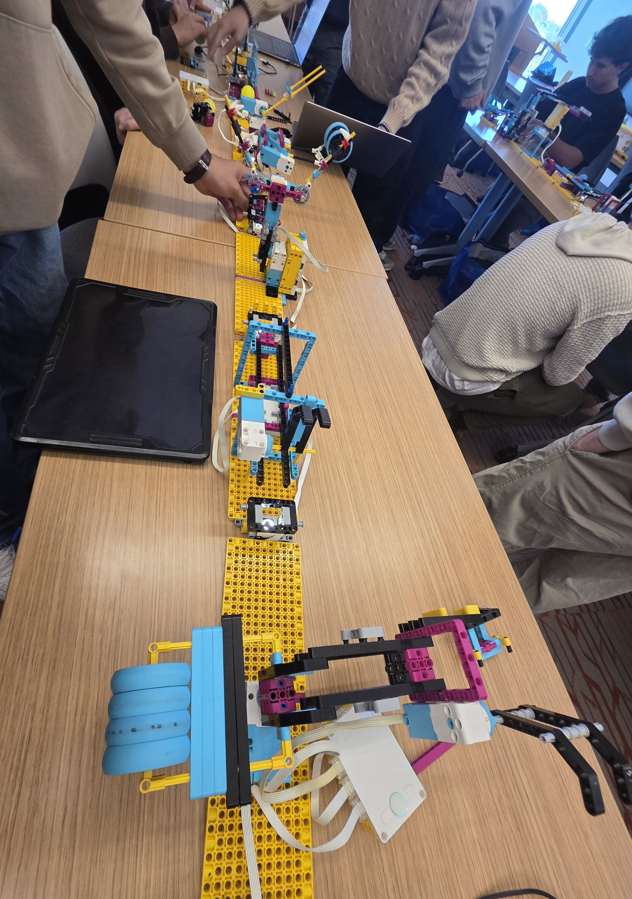

For this project, we had to build a robot arm that could move a ping pong ball from one end of the module to another. Then we linked our designs to make one long chain in class.
The main challenge for me was working under a very limited time constraint. As a result, I developed one idea and stuck with it, making many revisions to improve its accuracy. Some of the changes I made were adding a counterweight, adding a lot of structural supports to the arms, and calibrating the starting positions and speeds to make the arm as reliable as possible.
I also had to think about modularity. I made the arm start and end far away from the baskets, work with any color ping pong ball, and changed the length of my claw so it would not interfere with another module's area.